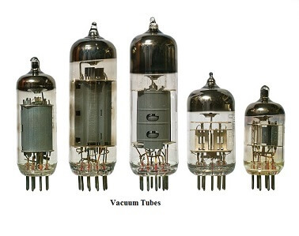
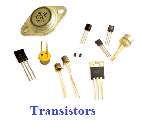
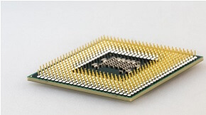

First-generation (1940 - 1956)
The first electronic computer used vacuum tubes as a serious piece of technology that was ENIAC, which stands for Electronic Numeric Integrated And Calculator, invented by J.W.Mauchy and J.P.Eckert. From 1940 through 1956, vacuum tubes were widely employed in computers. The first-generation computers were very large in size and took up much space in the room because vacuum tubes were larger components used in the computers. Even some of the first-generation computers were such large in size; they took up an entire room. It weighed more than 30 tons and included 70,000 resistors, 10,000 capacitors, additionally as approximately 20,000 vacuum tubes. The below picture is of the vacuum tubes.
Second generation (1956 - 1963)
Instead of vacuum tubes, the second generation of computers was supported transistors. From 1956 through 1963, transistors were widely utilized within the second generation of computers. As compared to the primary generation of computers, these computers were small in size because they used transistors in these generations of computers that were smaller than vacuum tubes. Also, in terms of speed, the second generation of computers was faster. And they were cheaper to create. In 1956, computer TX-0 was introduced, which was the primary computer that used transistors.
Third generation (1964 - 1971)

Fourth generation (1972 - 2010)
The Microprocessor, commonly called a CPU (Central Processing Unit), was used by the fourth generation of computers. A microprocessor is used in a computer that led to makes a computer more powerful and small in size as well as fits easily on a desk. Also, microprocessors, along with integrated circuits, helped to introduce the laptop. For providing users more comfort, GUI (Graphics User Interface) technology was exploited. The IBM 5100, Altair 8800, Micral, and some others are older computers that used a microprocessor. Although the fourth generation is considered to have ended in 2010, in modern times, the microprocessor is still in use in computers.
Fifth-generation (2010 to present)
The fifth generation of computers is predicated on artificial intelligence. AI is an advanced technology that contains various possible applications all over the world. The primary purpose of this generation of computers is to make a device more capable of self-organization and learning, including could respond to natural language input. The ten million electronic components have consisted of the production of a microprocessor as this generation is based on Ultra Large-Scale Integration (ULSI). Although AI made computers more powerful, there is still a need for some improvement in the computer. IBM's Watson is a common example of computers used AI, which was featured as a contestant on the TV show Jeopardy.Microsoft's Cortana on Windows 8 and Windows 10 computers and. Apple's Siri on the iPhone are some other examples of computers that used AI. Furthermore, AI is also used in a search engine like Google to process user searches.